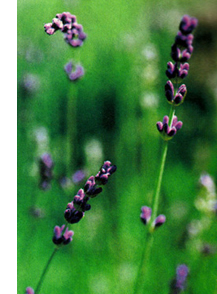
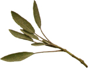
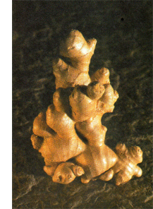

NATURAL HEALTH
(Without going under the knife)
Both my wife and I share a propensity for back problems. Peggy is a good example of how back problems often run in families. She and her two sisters (like their late mother) have a peculiar kink in the same area of their backs that causes them grief, especially following extended kitchen work at sink height.
Scrooge that I am, I blame my most serious back problem on Christmas. It was December 23, 1991, when Peggy and I went to a nearby Christmas tree farm to select a living tree. Wanting to replant the tree, I dug a big ball of earth with it and managed to heave the whole thing into the wheelbarrow the owner had lent me. I successfully wheeled that 100-pound load 100 yards up the hill to my station wagon, but when I attempted to lift it from the wheelbarrow to the wagon's trunk, something snapped.
Agony ensued. It grew worse as we drove home. Santa's back was ruined. I could not lie, sit or stand comfortably. I slept terribly, sideways on a couch with three pillows under my left side. The only help we could find the following day, Christmas Eve, was a chiropractor. He took a $95 X-ray, declined to do major manipulations and said I should see an orthopedist.
A week later the orthopedist said I should consult a neurosurgeon. Not surprisingly he said I needed surgery. He insisted this was my only option, given my X-rays. So ultimately (two months later), I had surgery, followed by physical therapy. I also used healing herbs and had acupuncture treatments. I think the alternative treatments gave me more relief than the physicians.
BACKACHES ABOUND
It seems everywhere I look, people have back problems. That's not surprising, since aching backs are one of America's most prevalent health pr oblems. Estimates vary, but the experts generally agree that somewhere between 2 million and 5 million Americans suffer serious back pain each year.
At some point in life, about four out of five Americans experience back pain severe enough to require medical intervention-anything from taking aspirin to having major surgery. And at any given moment, something like one-quarter of the country is dealing with previous back trouble by taking medication, doing exercises or making other lifestyle adjustments to convalesce and keep from reinjuring their backs.
Bad backs also cost the country a fortune, $16 billion a year in medical treatment and $80 billion in lost wages and productivity.
BE WARY OF SURGERY
Doctors used to treat back pain with rest, long-term medication and surgery. Now they generally recommend short-term medication, exercise and increasingly, chiropractic, yoga or some other formerly scorned alternative therapy.
I'm glad surgery has fallen out of favor. My own back surgery seemed useless. I did not seek a second opinion, even though friends advised me to. Why? Because I'm a lazy cheapskate who goes with the flow of a health management organization (HMO), and I wanted so desperately to put my back pain behind me.
I'll go to my grave not knowing whether the surgery did me any good. I have since learned cervical fusion-the operation I endured-is one of those over performed operations. I found out bad X-rays don't always mean bad backs and good X-rays don't always mean good backs. I learned 80 percent of people in the kind of distress I had recover in four months without surgery.
But unrelating pain makes people desprate.We Americans undergo a lot less back surgery than we used to, but there are still about 20 minutes more back operations per capita in the United States than in Canada and Europe.
In the meantime , What you can do about the pain Immediately after a back in-jury or a flare-up of back pain, doctors recommend pain-relieving and anti-inflammatory medications such as aspirin and other nonsteroidal anti-inflammatory drugs. For really bad pain, stronger medications might be necessary, including codeine or other narcotics. If you're in serious pain, I'd suggest taking whatever the doctor orders. Recently physicians have become more inclined to give slow-release morphine, which comes from the opium poppy.
GREEN PHARMACY FOR BACKACHE
For lesser pain or lingering pain, a number of herbal alternatives can prove helpful.
Red pepper (Capsicum, various species). Red pepper contains a marvelous pain-relieving chemical-capsaicin-that is so potent a tiny amount provides the active ingredient in some powerful pharmaceutical topical analgesics. One over-the-counter product, Zostrix, contains only 0.025 percent capsaicin. At this point I don't know (or care) whether red pepper's effectiveness is due to capsaicin's ability to interfere with our perception of pain, to the herb's ability to trigger a release of the body's own pain relieving endorphins, to its salicylates, or to all three. All I know is that it works.
You can buy a commercial cream containing capsaicin and use that. Outside the United States, however, people simply use red pepper. You can, too, at considerable savings. A hot pepper costs a few cents, while capsaicin drugs cost a few dollars. You can mash a red pepper and rub it directly on the painful area. You can also take any white skin cream you have on hand-cold cream will do-and mix in enough red pepper to turn it pink. Whether you use a cream or a hot pepper, be sure to wash your hands thoroughly afterward: You don't want to get it in your eyes or other sensitive areas. Since some people are quite sensitive to this compound, you should test it on a small area of skin to make sure that it's OK for you to use before using it on a larger area. If it seems to irritate your skin, discontinue use.
Willow (Salix, various species) and other forms of natural aspirin. I have no problem with taking aspirin, since it was originally derived from an herbal source. It originally came from compounds known as salicylates that occur naturally in willow bark, meadowsweet and wintergreen. Any of these herbs can be made into pain-relieving teas. Many salicylate-rich plants also contain methyl-salicylate, an aspirin-like compound with a particularly pleasing smell. One is wintergreen. Another is birch bark, once used by American Indians to make a tea they drank or applied externally to treat lower-back pain. On occasion I have made such teas by throwing roughly a handful of birch bark or wintergreen into a cup or two of boiling water and letting it steep for about 10 minutes. (Remember, though, if you're allergic to aspirin, you probably shouldn't use aspirin-like herbs, either.) Oil of wintergreen, which is high in methyl-salicylate, also serves as a good pain reliever for external use. It may be applied during massage. (Make sure you keep oil of wintergreen out of children's reach. It has a tempting aroma, but ingesting even a little can prove fatal.)
Peppermint (Mentha piperita) and other mints. You will find the compounds menthol and camphor in many over-the counter backache medications. They are chemicals that can help ease the muscle tightness that contributes to many bad backs. Menthol is a natural constituent of plants in the mint family, particularly peppermint and spearmint, although the aromatic oils of all the other mints contain it, as well. Camphor occurs in spike lavender, hyssop and coriander.
Assorted essential oils. Massage treatment with essential oils can often help relieve the painful muscle spasms that contribute to back pain. Several of these sage, rosemary, thyme, horsebalm and mountain dittany--are rich in thymol and carvacrol, compounds that help muscles relax.
To use any of these oils, add a few drops to a couple of tablespoons of any vegetable oil and massage the oil mixture directly into the affected area. You might also add a few drops of the oil to a hot bath and soak for a while, inhaling the steamy vapors. (Remember, though, never ingest an essential oil, as small quantities of some oils, on the order of a single teaspoon, can be fatal.)
Other compounds with potent muscle relaxing action that can relieve back spasms are borneol and bornyl-acetate. Plants rich in these chemicals include cardamom, sage and rosemary. My database tells me borneol is an effective antispasmodic compound at a very diluted concentration, making it even more potent than menthol, camphor, thymol and carvacrol.
There are also a few other oils you should know about. Aromatherapists often suggest using the oils of birch, lavender, black pepper, clary, ginger and marjoram to alleviate backache. I would not hesitate to use any of these, as all have a folkloric history for relieving cramps or backaches, and all contain pain-relieving and muscle relaxing compounds.
Why use the plant oil if you can obtain chemically isolated menthol or some other muscle-relaxing chemical? Because, in my opinion, the whole aromatic herb oil is likely to work better. These oils evolved to protect the plants from pests and other environmental stresses. The fact that aromatic herb oils evolved into a chemically complex mixture suggests all the chemicals in them work together.
Moving toward a Cure
One of the worst things you can do for an aching back is to a stop exercising, according to Leon Root, M.D., orthopedic surgeon and author of Oh, My Aching Back. In fact, exercise experts claim 80 percent to 90 percent of back problems are caused by weak muscles. Doctors have also come around to this view and now recommend gentle exercise instead of rest.
I can attest to the effectiveness of this approach. I do back exercises religiously every morning before my shower and also before and after activities I know can trigger back pain: cutting my lawn (more than an acre), standing in long lines or at cocktail parties, and moving heavy objects. I swim when the opportunity arises, ride a stationary bike and walk a mile or two a day.
The YMCA has developed a popular nationwide back-exercise program that combines strength training, flexibility exercises and relaxation. About 80 percent of enrollees report improvement, and 31 percent become pain-free. You might want to contact your local YMCA and ask about this program. Think about it: About one-third of bad backs can be cured with no medicine at all.
Look for more excerpts from James Duke's The Green Pharmacy (See MOTHER'S Bookshelf, Page 120) in future issues of Mother Earth News. One of the world's leading authorities on herbal healing, Duke is author of The Green Pharmacy AntiAging Prescriptions (Rodale Press). Active in rain forest preservation, he regularly leads ecotours in the Amazon. Contact him at jduke@fathernaturesfarmacy.com.
|
Spike lavender is a source of camphor, which can be used as an essential oil in massage to help relieve back pain. |
 Plants rich in borneol and bornyl-acetate such as sage, cardamom, and rosemary can help relieve back spasms. |
 Ginger is one of several essential oils aromatherapists recommend for pain relief. In addition, ginger is a major edible source of COX-2 inhibiting anti-inflammatories. |
|
 |
|
|